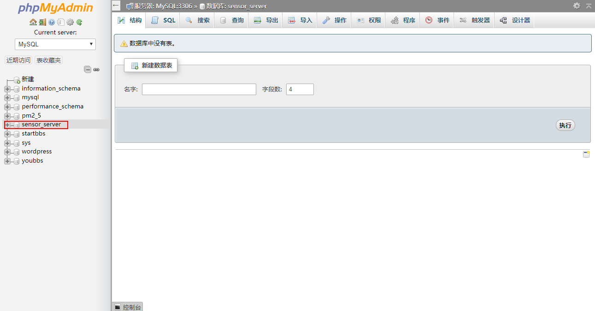

1.创建数据库
在MySql数据库中创建一个名为Sensor_server的数据库，如下图：

在数据库中创建一个名为sensor_test的数据表，使用如下SQL语句：1
2
3
4
5
6
7
8
9
10
11
12
13CREATE TABLE IF NOT EXISTS `sensor_test` (
`id` int(11) NOT NULL,
`sen_id` int(11) NOT NULL,
`temp` int(11) NOT NULL,
`humi` int(11) NOT NULL,
`pm25` int(11) NOT NULL,
`pm10` int(11) NOT NULL,
`pm100` int(11) NOT NULL,
`co2` int(11) NOT NULL,
`ze08` int(11) NOT NULL,
`tvoc` int(11) NOT NULL,
`timeStamp` timestamp NOT NULL DEFAULT CURRENT_TIMESTAMP ON UPDATE CURRENT_TIMESTAMP
) ENGINE=MyISAM DEFAULT CHARSET=utf8mb4;

2.创建PHP文件
2.1 创建数据库连接PHP文件
创建名为database.php 的文件，写入以下代码：1
2
3
4
5
6
$connect=mysqli_connect('localhost','用户名（最好不用root）','数据库密码','sensor_server');
if(mysqli_connect_errno($connect)) printf("Failed to connect");
else printf("Success to Connect\r\n");
2.2 创建数据库操作PHP文件
创建名为process.php 的文件，写入以下代码：1
2
3
4
5
6
7
8
9
10
11
12
13
14
15
16
17
18
19
20
header("Content-type:text/html;charset=utf-8");
date_default_timezone_set("Asia/Shanghai");
echo "当前时间是 " . date("H:i:s")."<br>";
include("database.php");
$sen_id=$_POST['sen_id'];
$pm25=$_POST['pm25'];
$pm10=$_POST['pm10'];
$co2=$_POST['co2'];
$tvoc=$_POST['tvoc'];
$pm100=$_POST['pm100'];
$ze08=$_POST['ze08'];
$temp=$_POST['temp'];
$humi=$_POST['humi'];
$id=$_POST['id'];
print_r($_POST);
mysqli_query($connect,"INSERT INTO sensor_test(pm25,pm10,pm100,co2,tvoc,temp,humi,ze08,id,sen_id) VALUES('$pm25','$pm10','$pm100','$co2','$tvoc','$temp','$humi','$ze08','$id','$sen_id')");
mysqli_close($connect);